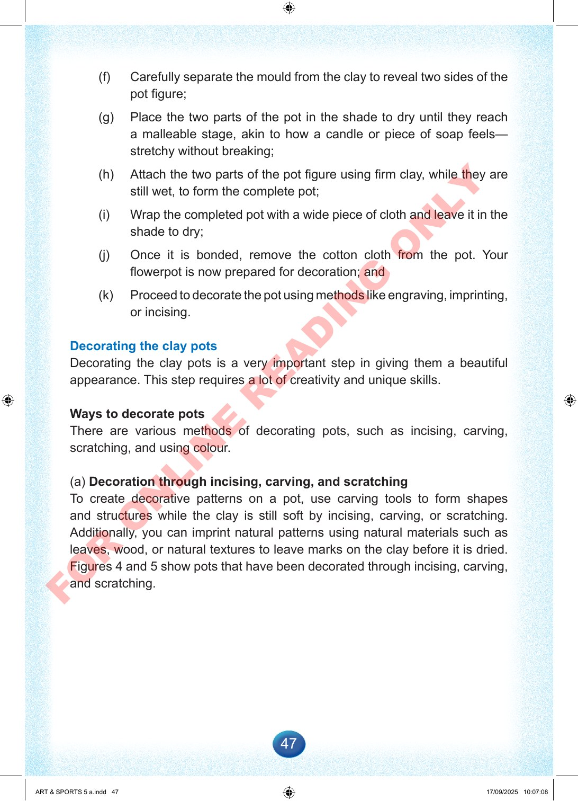

47
(f)
Carefully
separate
the
mould
from
the
clay
to
reveal
two
sides
of
the
pot
figure;
(g)
Place
the
two
parts
of
the
pot
in
the
shade
to
dry
until
they
reach
a
malleable
stage,
akin
to
how
a
candle
or
piece
of
soap
feels—
stretchy
without
breaking;
(h)
Attach
the
two
parts
of
the
pot
figure
using
firm
clay,
while
they
are
still
wet,
to
form
the
complete
pot;
(i)
Wrap
the
completed
pot
with
a
wide
piece
of
cloth
and
leave
it
in
the
shade
to
dry;
(j)
Once
it
is
bonded,
remove
the
cotton
cloth
from
the
pot.
Your
flowerpot
is
now
prepared
for
decoration;
and
(k)
Proceed
to
decorate
the
pot
using
methods
like
engraving,
imprinting,
or
incising.
Decorating
the
clay
pots
Decorating
the
clay
pots
is
a
very
important
step
in
giving
them
a
beautiful
appearance.
This
step
requires
a
lot
of
creativity
and
unique
skills.
Ways
to
decorate
pots
There
are
various
methods
of
decorating
pots,
such
as
incising,
carving,
scratching,
and
using
colour.
(a)
Decoration
through
incising,
carving,
and
scratching
To
create
decorative
patterns
on
a
pot,
use
carving
tools
to
form
shapes
and
structures
while
the
clay
is
still
soft
by
incising,
carving,
or
scratching.
Additionally,
you
can
imprint
natural
patterns
using
natural
materials
such
as
leaves,
wood,
or
natural
textures
to
leave
marks
on
the
clay
before
it
is
dried.
Figures
4
and
5
show
pots
that
have
been
decorated
through
incising,
carving,
and
scratching.
ART
&
SPORTS
5
a.indd
47
ART
&
SPORTS
5
a.indd
47
17/09/2025
10:07:08
17/09/2025
10:07:08
F
O
R
O
N
L
I
N
E
R
E
A
D
I
N
G
O
N
L
Y